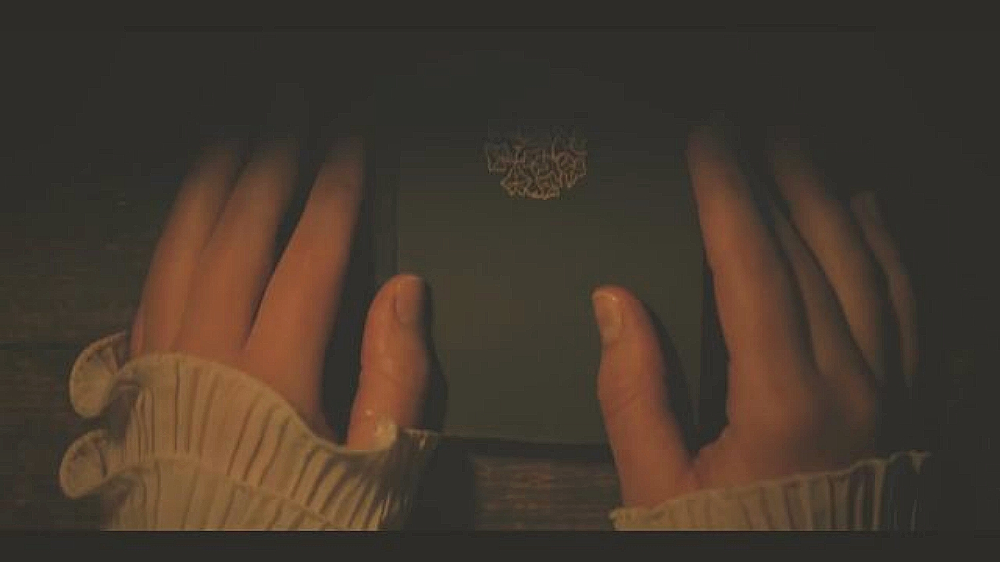
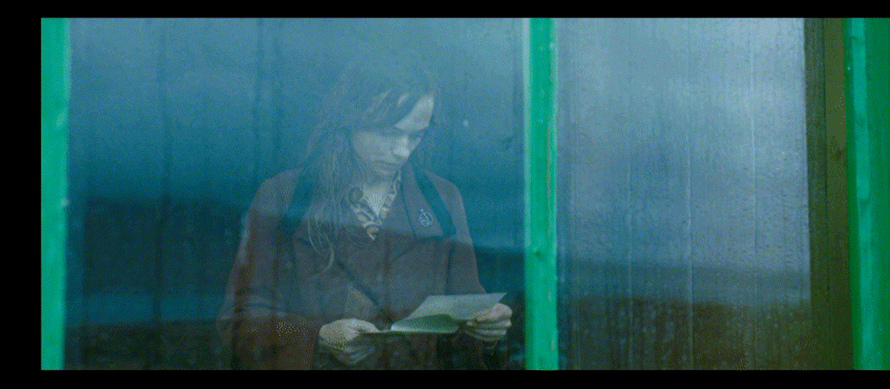
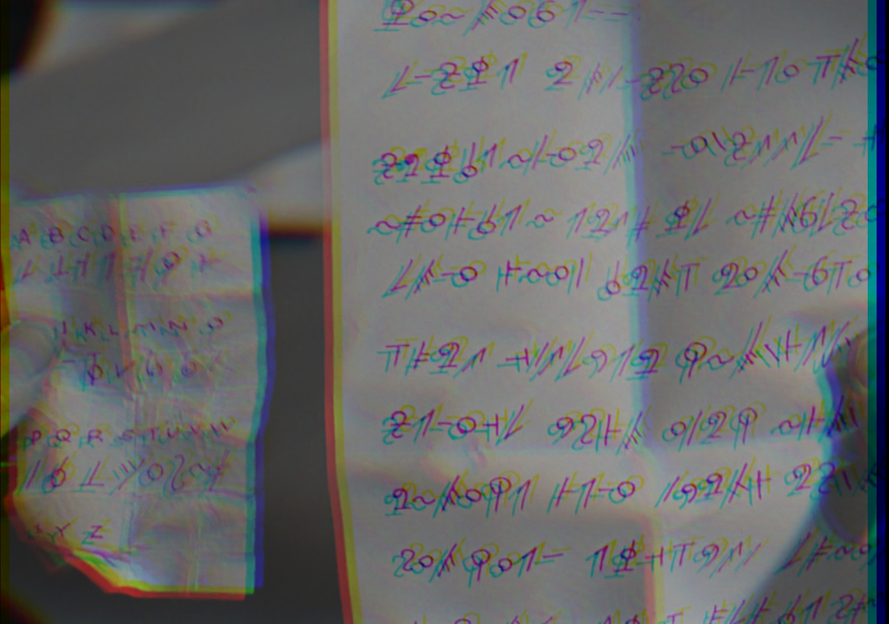
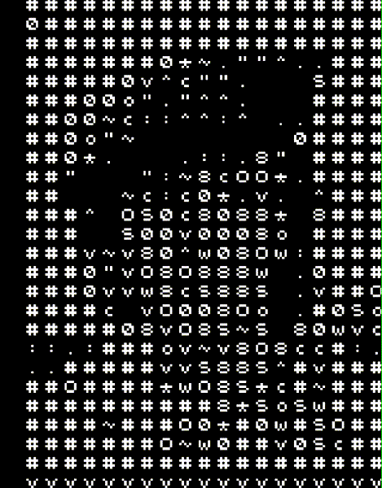
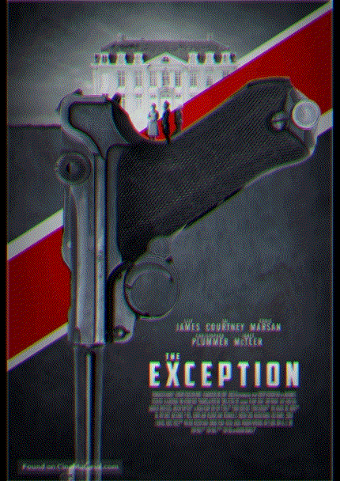
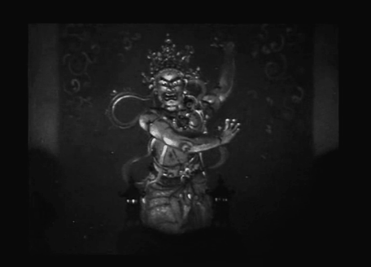

musician
visual artist
toggle the triple line for the list...
song bookreturn
Моя работа - говорить живыми образами, а не аргументами
toggle the triple line for the list...
song bookLITERARY PHOTO PLAYS
0__this is joan collins
1__Дневник Анны Франк
2__ mrs parker and the vicious circle
3 __stardust memories
4__ the ghost writer
carousel iffy @ safari
5__swimming pool
6__naked lunch
5__swimming pool
6__naked lunch
7__total eclipse
8__reds
9__ prozac nation
10__adaptation
11__Paura e delirio
12__wonder boys
13__lolita (1962)
14__lolita (1998)
15__beat
16__the hours
17__la dolce vita
18__shakespeare in love
19__quills
20__before night falls
21__il postino
22__pinero
23__heart beat -1980-
24__veronica guerin
25__tom and viv
26__skipped parts
27__barton fink
28__last call
29__the bell jar 1979
30__sylvia
31__shipping news
32__suffering man’s charity
33__wilde
34__the disappearance of garcia lorca
35__sunset boulevard
36__the anniversary party
37__Woody Allen Fall Project 1996 (working title)
38__the shining
39__nora
40__mother night
41__letter from an unknown woman
42__finding forrester
43__roman holiday
44__blue car
45__don’t look back
46__gothic
47__american splendor
48__shadowlands
49__annie hall
50__secret window
51__arsenic and old lace
52__the man from elysian fields
53__born into this
54__lord byron of broadway
55__8 mile
56__the front
57__as good as it gets
58__the secret life of ian fleming
59__the muse
60__the pillow book
61__bullets over broadway
62__the producers
63__authur! Author!
64__chapter two
65__Syysmuistoja
66__the loves of edgar allan poe
67__the man with a cloak
68__torture garden
69 __celebrity
70__something’s gotta give
71__alex and emma
72__every word is true
73__kinsey
74__in my country
75__Taksówkarz
76__moulin rouge!
77__finding neverland
78__the motorcycle diaries
79__the kiss
80__this world, then the fireworks
81__divine secrets of the ya ya sisterhood
82__the philadelphia story
83__hemingway
84__the rum diary
85__the crush
86__where the truth lies
87__all the president’s men
88__ask the dust
89__kalifornia
90_the door in the floor
91__sideways
92__dogville
93__little man tate
94__neverwas
95__king lear (1987)
96__the vanishing
97__how to lose a guy in ten days
98__everyone says i love you
99__field of dreams
100__the last shot
101__never been kissed
102__all i want
103__state and main
104__ Hermot pinnalla
105__housebound
106_flashback(1990)
107__sade
108__closer
109__zola
110__black river
111__stone reader
112__try seventeen
113__writer of O
114__les enfants du sicle
115__la petite lili
116__byron
117__the lost weekend (1945)
118__salem’s lot
119__luck
120__under the tuscan sun
121__celeste in the city
122__young adam
123__home of the giants
124__how to kill your neighbor’s dog
126__rag tale
127__girl interrupted
128__the devil wears prada
129__postcards from the edge
131__artists and models (1955)
132__rumor has it
133__ivans xtc
134__skin deep
135__2046
136__bordertown
137__wag the dog
138__obsessed (2002)
139__poetic justice
140__half light
141__Капоте 2005 - bennet miller
142__the edge of madness
143__cheaper by the dozen
144__orlando
145__before sunset
146__the odd couple
147__impromptu
148__wings of courage (1995)
149__the naked truth (1957)
150__james joyce’s women
151__the singing detective (2003)
152__festival in cannes
153__le divorce
154__freedom writers
155__no direction home
157__my dog skip
158_le seuil
159__mean girls
160__duplex
161__breaking all the rules
162__Anime gemelle
163__he said/she said
164__journey of a lifetime
165__turtle diary
166__factotum
167__lunacy
168__love and other disasters
169__lila says
170__a love song for bobby long
171__scoop
172__the nanny diaries
173__rko 281
174__the dreamers “a poem is a petition”
175__meet the press (1937)
176__dedication
177_kiss kiss bang bang
178__the unbearable lightness of being
179__caitlin
180__running with scissors
181_candy
182__becoming jane
183_alpha numeric
184__songwriter
185__a prairie home companion
186__interview (2007)
187__Klang der Stille
188__kafka
189__the tiger and the snow
190__your name here
191__novel romance
192__land of the blind
193__i am a camera (1955)
194__music and Lyrics
195__rough draft
196__kissing jessica stein
197__art house
198__wife vs secretary
199__Генри дурак
200__fay grim
201__f scott fitzgerald in hollywood
202__the shadow dancer
203__the front page
204__Immortel (ad vitam) “You are going to write yourself a new story”
205_deadline - U.S.A.
206__stranger than fiction (2005)
207__stranger than fiction (2006)
208__everything is illuminated “in case anyone comes searching”
209__neal cassady
210__moliere
211 _hannah and her sisters
212__bright lights, big city
213__gospel according to janice
214__trifling with fate
215__tour deluxe edition
216__the best time of our lives
217__tokyo suckerpunch
218__unge andersen
219__cry freedom
220__дневник анны франк
221__bridget jones’s diary
222__multiple sarcasms
223__jake’s women
224__the obit writer
225__paper lion
226__resurrecting the champ
227__gothic
228__fairytale: a true story
229__zelda
230__el sueño del mono loco
231__the writer (2004)
232__the hollywood reporter (1926)
233__the passenger 1975
234__assassins: a film concerning rimbaud
235__the naked civil servant
236__une saison dans la vie de fedor dostoïevski
237__the pagan book of arthur rimbaud
238__suburban girl
239__her alibi
240__roma
241__in love and war
242__hell is sold out
243__les soeurs brontë
244__bon voyage
245__st elmo’s fire
246__jours tranquilles a clichy
247__nim’s island
248__the jane austen book club
249__miss potter
250__broken flowers
251__tip toes
252__walk the line
253__teaching mrs tingle
254__stupeur et tremblements
255__the big chill
256__jerry maguire
257__Pandaemonium
258__The Social Network
259__the night of the iguana
260__election “Maybe, he finished his novel.”
261__dolce’s inferno
262__munich “He just translated the Arabian Nights into Italian.”
263__the dying gaul
264__on the hook
265__festival
266__a mighty heart
267_hating alison ashley
268__the last word
269__shanghai baby
270__the whore and the whale
271__another woman
272__dante’s inferno
273__campus confidential
274__casanova
275__il casanova di Federico Fellini
276__dick
277__caffeine
278__the garden of eden
279__what women want
280__biloxi blues
281__full time killer
282__the end of the affair
283__mr deeds
284_what just happened?
285__i know who killed me
286__the holiday
287__dali & i: the surreal story
288__get shorty
289__rapid eye movement
290__how to lose friends & alienate people
291__bonnie and clyde
292__witches of eastwick
293__scenes from a mall
294__synecdoche, new york
295__coyote ugly
296__the squid and the whale
297__inkheart
298__phantasmagoria:the visions of lewis carroll
299__bronte
300__the nines
301__the number 23
302__control
303__what’s new, pussycat?
304__how is your fish today?
305__Il matrimonio di mia sorella
306__I’m not there
307__the diving bell & the butterfly
308__Mr Nobody
309__A Tale Of Love & Darkness
310__The Last Word \
310__Le mepris
311__the secret diary of sigmund freud
312__agatha
313__corso:the last beat
314__kerouac,the movie
315__trumbo
316__The Age Of Love
317__Kit Kittredge: An American Girl
318__Roman Polanski:Wanted And Desired
319__Girl Cut In Two
320__Eastern Promises
321__Vicky Christina Barcelona
322__stay cool
323__the white hotel
324__deadline
325__the beautiful and the damned
326__Maestro e Margherita 1972
327__Mistrz i Malgorzata 1990
328__Master i Margarita 1993
329__the master and margarita 2005
330__NINE
331__he’s just not that into you
332__fay wray:a life
333__VALKYRIE
334__men
335__schweitzer
336__amelia
337__NOTHINGbutTHEtruth
338__the last station
339__the argentine
340__guerilla
341__the last time i saw paris, 1954
342__frost/nixon
343__me and orson welles
344__howl
345__les passages
346__zodiac
347__burn after reading
348__an englishman in new york
349__brief interviews with hideous men
350__YOUTHwithoutYOUTH
351__INtheMEANTIME
352__Men Who Stare At Goats
353__the scribe, 1966
354__confessions of a shopaholic
355__untitled Leni Riefenstahl Egg Pictures Project
356__wild cherry
357__Hollywood Renegade
358__Blessed Is the Match: The Life and Death of Hannah Senesh
359__Morning Glory
360__eat PRAY love
361__tetro
362__the player
363__the insider
364__Szenen eines wüsten Lebens
365__be cool
366__empireOFtheSUN
367__Hemingway & Fuentes
368__Julie & Julia
369__Atonement
370__Mighty Mighty Aphrodite
371__the limits of control
372__Angels & Demons
372andahalf__The Da Vinci Code
373__little ashes
374__unforgiven
375__bram stoker’s dracula
376__dracula (1931)
377__nosferatu (1922)
378__shadow of the vampire
379__she wrote the book (1946)
380__he wrote poetry (1916)
381__walks
382__she wrote a play and played it(1916)
383__creation
384__BRIGHT STAR would I were steadfast as thou art—
385__the GIRLFRIEND experience
386__Die Liebesfälscher
387__son of morning
388__The Gossip Columnist
389__Brüno
390__HurlyBurly
391__PATTON
392__IT RUNS IN THE FAMILY
393__SOMEWHERE
394__NICE
395__Goree Girls
Sucsy, the director, is reportedly drafting the Hancock version which was reworked from the Nagle script based on some article by Hollandsworth which took its title from a cohen brothers film who don’t always credit screen-writers and was based on buena vista social clubesque events in the 1940s when radio was the choice in home entertainment i mean of course aside from the usual makin’ whopee or fighting the axis, which probably means that the actual girls won’t get ‘one penny from those thousands and thousands_’ special thanks to Variety (no pun intended)
396__Bound For Glory “If you cannot be a poet, be the poem”
397__The Last Sect
398__cold souls
399__crazy heart
400__the green hornet
401__Der Baader Meinhof Komplex
402__Jud Süß
403__2O Percent Fiction
404__Der Poet
405__Der Bestseller - Mord auf italienisch
406__Der Bestseller - Wiener Blut
407__Access Code
408__Teenage Paparazzi
409__Ed Wood
410_husbands and wives
411__peep world
412__deception 1946
413__jealousy 1929
414__new york i love you
415__the life and death of peter sellers
416__you, me, and dupree
417__the basketball diaries
418__The Blue Tooth Virgin
419__King Of California
420__The Amateurs
421__THE BUSINESS OF FALLING IN LOVE
I was pretty near to placing the four twenty one, but it was about a picture-book. Still, the review holds a sentence I thought cool enough to include: “There are plenty of movies about the life of Jesus, but when was the last time you saw St. Peter on screen, writing it down?” - HALE, nyTIMES
422__full METAL jacket
423__NOWHERE BOY
424_california suite
425__FREAKY FRIDAY
426__call northside 777
427__SHERLOCK HOLMES
428__state of play
429__sex and the single girl
430__sex and the city
431__sex and the city 2
432__starstruck working titles included: “dust and stardust” and “starfucker” -you can’t make these things up, even when you’re down-
433_THE FUNERAL PARTY
434__the book of eli
435__gentlemen broncos
436__jennifer’s body
437__Das Leuchten der Stille
438__letters to juliet
439__official selection
440__front page woman
441__tough guys don’t dance
442__Throw Momma from the Train
443__The Beaches of Agnès
444__THErunAWAYS
445__twin peaks: fire walk with me
446_أليس في بلاد العجائب
-two listed yet there: are silent and several other versions known in sweden as Alice i Underlandet...
447_ალისა საოცარ ქვეყანაში
448_The Bitch Posse
449_Father Of Invention
450_Paranoid Park
451_Delírios Eróticos 1990 -kaufman;
452_HEREAFTER
453_THE POET
454_A CLOSED BOOK
455_You Will Meet a Tall Dark Stranger
456_diaryOFaWIMPYkid
457_kickASS
458_theLONGriders
459_the fellowship of the ring
460_the two towers
461_the return of the king
462_LUCKY DUCKS
463_edith’s diary
464_the image of dorian gray in the yellow press
465_the bitter tears of petra von kant
466_TRISTRAM SHANDY
467_son of rambow
468_WALL STREET:money NEVER sleeps
469_STONESinTHEpark
470_GIMME SHELTER
471_LET’SspendTHEnightTOGETHER
472_25x5
473_VOODOO LOUNGE LIVE
474_onePLUSone
475_SHINE A LIGHT
476_BRIDGEStoBABYLON
477_STONESatTHEmax
478_LADIES&GENTLEMENtheROLLINGstones
479_poetry
480_inferno
481_luke and brie are on a first date
482_raavan
483_dash and lilly
484_Jack London
485_THE LIFE OF EMILE ZOLA
486_out of africa
487_lady caroline lamb
488_devotion 1946
489_a song to remember
490_the trials of oscar
491_INCEPTION
492_LET IT RAIN
493_wild grass
494_the9thgate
495_Maumln Som Hatar Kvinnor
496_theGIRLwithTHEdragonTATTOO
497_chatterbox 1977
498_LEAVING HAVEL
499_Who Is Harry Kellerman and Why Is He Saying Those Terrible Things About Me?
500_LITTLE BIG MAN
501_UNTITLED MARIA CALLAS PROJECT
502_maria callas biopic with the divine eva green
503_CALLAS FOREVER
504_The War Between Men and Women
506_the boyfriend school
507_i’m still here
508_When Nietzsche Wept
509_Mark Twain Tonight!
510_In the Realms of the Unreal
511_Wrong Is Right
512_THE SWINGER - 1966
513_CRossed Over
514_THE man WITHIN
515_IN SEARCH OF lovecraft
516_La Chamade - released in America as “heartbeat” - 1969–
517_the hunger
518_А вот и Полли
519_a KNIGHTS tale
520_vibrator
521_the KING’S speech
522_love songs
523_virgin machine
525_assassination of a High School president
526_russian dolls
527_ruby sparks
528_the ghost and mr chicken
529~~_the master
530~~_on the road
531_La rubia satánica
532~~_doctor sleep
533_EFFIE
534_POE
535_CARNAGE
536_A Vida Perigosa dos Rapazes do Altar
537_THE WORDS
538_HER (2013)
539~~_A DANGEROUS METHOD
540_THE PRIVATE LIVES OF PIPPA LEE
541_DOWN BY LAW “I have lost my book of English”
542_MISSING
544_IT HAPPENED ONE NIGHT
545_DEATHWISH IV THE CRACKDOWN
546_A BUCKET OF BLOOD
547_THE MONKEY’S MASK
548_GOOD AGAINST EVIL
549_Philip Roth Unmasked
550_THE WORLD ACCORDING TO DICK CHENEY
551_MAIDSTONE
552_SALINGER
553_WRITER’S BLOCK 1991
554_MY DEAR SECRETARY
555_BEES IN PARADISE
556_DIARY OF A NUDIST
557_LOVE LETTERS OF A PORTUGUESE NUN
558_TWINKY
559_GIRL WITH GREEN EYES
560_everyday objects
561_labor pains
562_the lifeguard
563_the new daughter
564_TWIXT
565_hustling
566_TAKE THIS WALTZ
567_STORIES WE TELL
568_PLUSH
569_SEVEN PSYCHOPATHS
570_HER
571_the invisible woman
572_authors anonymous
573_the last beat
574_loveship hateship
575_venus in fur
576_FLEMING: THE MAN WHO WOULD BE BOND
577_anonymous
578_LOVE IS THE PERFECT CRIME
579_voodoo man
580_THE LETTER
581_28 hotel rooms
582_CRASHING
583_set fire to the stars
584_INFAMOUS
585_Tempo de Crescer
586_GOD HELP THE GIRL
587_THE ENGLISH TEACHER
588_SHOWTIME 1946
589_TWIN PEAKS: THE ENTIRE MYSTERY
590_PREDESTINATION
591_a room with a view
592_SYRUP
593_THE ADDERALL DIARIES
594_ASK ME ANYTHING
594_BLIND REVENGE -2009-
595_THE POET - 2007 -
596_meet me in montenegro
597~_The Taliban Shuffle
598_The Last Five Years
599_Woodstock
600_The Lives Of Others
601_SATAN’S BREW
602_BEWARE OF A HOLY WHORE
603_PLAYING IT COOL
“even my imagination took a kick to the balls”
605_THE GAMBLER
606_inherent vice
607_THE TEAM
608_blackhat
609_how to make love like an English man
610_we need to talk about kevin
611_HIT BY LIGHTNING
612_the osterman weekend
613_in the land of women
614_PULP
516_A DARK REFLECTION
617_danny collins
618_strangerland
619_true story
620_PLEASE STAND BY
621_the escort
622_some kind of beautiful
née how to make love to an englishman
623_the diary of a teenage girl
624_the thirteenth tale
625_love & mercy
626_everything will be fine
627_5 to 7
628_the end of the tour
629_truth
630_manifesto
631_the secret scripture
632_genius
633_YOUTH
634_the mad miss manton
635_comrade x
636_crimson peak
637_THE BARRETTS OF WIMPOLE STREET
638_in the good old summertime
639_when ladies meet 1933
640_when ladies meet 1941
641_FATHERS AND DAUGHTERS
642_the adventures of jack london
643_exclusive story
644_the famous ferguson case -1932-
645_never a dull moment -1950-
646_third finger left hand
657_authors anonymous
658_The typewriter (in the 21st century)
659_A QUIET PASSION
660_libeled lady
661_my favorite year
662_the constant nymph
663_rock the kasbah
664_young cassidy
665_beloved sisters
Die geliebten Schwestern (original title)
666_white bondage
667_alice in the cities
668_the paperboy
669_the odessa file
670_Hemingways Abenteuer eines jungen Mannes
671_tenebre
672_the kremlin letter
673_herostratus
675_press for time
676_BANNERLINE
677_the lost weekend
678_george white’s 1935 scandals
679_gold diggers of 1937
680_hollywood canteen
681_smart blonde
682_EVE KNEW HER APPLES
683_HHHH
684_anthropoid
685_the promise
686_the secret scripture
687_war machine
688~_viena and the fantomas
689_christine
690_neruda and jackie
691_Billy Lynn’s Long Halftime Walk
692_allied - 2016
693_love & friendship
694_it’s just the end of the world
695_elle
696_nocturnal animals
697_paterson
698~_Hail Caesar!
699_design for living
700_up pops the devil
701_in the mouth of madness
702_starting out in the evening
703_ask the dust
704_good night and good luck
705_the quiet american
706_the year of living dangerously
707_the adventurous blonde
708_blonde inspiration
709_in the good old summertime
710_shop around the corner
711_as clouds roll by
712_ words and music
713_theodora goes wild
714_the glass bottom boat
715_men are such fools
716_the big clock
717_foreign correspondent
718_freedom of the press
719_ever since eve
720_design for scandal
721_night without sleep
722_another man’s poison
723_The Subterraneans
724_the thirteenth letter
725_love letters 1945
726_the ex mrs bradford
727_sleuth 1972
728_sleuth 2007
729_the mask of dimitrios
730_charlie chan in the chinese cat
731_dear brigitte
732_the youngest profession
733_citizen kane
734_jefferson in paris
735_STARCROSSED
736_woman of the year
737_THE LIBERTINE
738_quartet
739_TWICE TOLD TALES
740_о аншлаг Генри
741_born yesterday
742_BELL BOOK AND CANDLE
743_manhattan night
744_MANHATTAN ROMANCE
745_MANHATTAN
746_JANE AUSTEN IN MANHATTAN
747_ADVENTURE IN MANHATTAN
748_YOUNG MAN OF MANHATTAN
749_MANHATTAN BY NUMBERS
750_sisters
751_marry the girl
752_behind the rising sun
753_june bride
754_this marriage business
755_the doorway to hell
756_winter meeting
757_long day’s journey into night
758__>LOVE & SAVAGERY
759_jazz heaven
760_young widow
761_critics choice
762_double exposure
763_THE BRIDE GOES WILD
764_BORN TO BE BLUE
765_Kill the Trumpet Player (working title)
766_UNHOLY PARTNERS
767_YOU CAN’T ESCAPE FOREVER
768_EQUALS
769_CERTAIN WOMEN
770_AUTHOR: JT LEROY STORY
771_THE DEVIL BAT
772_AMANDA KNOX
773_THE HOODLUM SAINT
774_iron moon
775_notes on blindness
777_MIFUNE
778_abattoir
779_BRAND NEW TESTAMENT
778_neruda
779_nocturnal animals
780_burn counter
781_the black book 2006
782_DEATHWISH TWO
783_the black book 1949
784_the deadly dream
785_kisses for my president
786_NAKED SOULS
787_die wahren memoiren eines internationalen killers
788_headline shooter
789_the redistributors
790_cobain montage of heck
791_sid & nancy
792_with love from the age of reason
793_my nights are more beautiful than your days
794_snowed under
795_the leading man
796_BURDEN OF DREAMS
797_the bad and the beautiful
798_DOWNFALL
799_the legendary life of ernest hemingway
800_the strange case of wilhem reich
801_poem: i set my foot upon the air and it carried me
802_my brilliant career
803_deathwatch
804_a letter to three wives
805_Vi trenger hverandre
806_the man who came to dinner
807_Das Leben ist Lüge
808_king of the newsboys
809_the night of january 16th
810_newsbreak
811_the sorrows of satan
812_PHANTOM 1922
813_anomalisa
814_american pastoral
815_pa$$engers
816_i am watching you
817_THE BELL JAR 2018
818_THE BEGUILED
819_gilded lilys
820_the circle
821_jason nash is married
822_how to talk to girls at parties
823_sudden fear
824_s
omewhere in time
825_touched by fire
826_american made
827_the greatest showman
828_rock that body
829_dostoevsky’s travels
831_dostoevsky behind bars
832_dostoevskiy
833_beyond a reasonable doubt
834_while the city sleeps
835_dead poets society
836_delta of venus
837_endless poetry
838_possession
839_the handmaiden
840_Seule sur la plage la nuit
841_final portrait
842_shoot the moon
843_angel
844_crouching tiger hidden dragon
845_Dongju: The Portrait of a Poet (Korea: 동주)
846_OUR MAN FLINT
847_in like flint
848_biography of a bachelor girl
849_the help
850_the post
851_last days of disco
852_by the sea
853_the raven
854_edgar a poe buried alive
855_hangman 2017
856_the girl in the book
857_leave her to heaven
858_DEAR DICTATOR
859_INSIDIOUS CHAPTER THREE
860_all the money in the world
861_MOLLY'S GAME
862_老娘叫譚雅
863_WELCOME THE STRANGER
864_LUCY
865_the vanishing of sydney hall
866_BLAME
867_the theory of everything
868_ANNIHILATION
869_SUSPIRA
870_tomb raider
871_down a dark hall
872_book club
873_the seagull
874_destination wedding
875_the sisters brothers
876_a private war
877_Long Strange Trip, or the Writer, the Naked Girl, and the Guy with a Hole in His Head
878_Based on a True Story
879_The Guernsey Literary and Potato Peel Pie Society
880_the rebel in the rye
881_MARY SHELLLEY
882_the imitation game
883_colette
884_official secrets
885_a house in the sky
886_the other side of the wind
887_they'll love me when I'm dead
889_f for fake
890_the eyes of orson welles
891_Don’t Worry, He Won’t Get Far on Foot
892_becoming astrid
893_velvet buzzsaw
894_at eternity's gate
895_bohemian rhapsody
896_the realm
897_boy erased
898_THE HOUSE THAT JACK BUILT
899_rumble fish
900_drugstore cowboy
901_the dirt
902_Extremely Wicked, Shockingly Evil and Vile
903_Tolkien
904_The Professor and the Madman
905_the professor
906_rocketman
907~~late night
908_blinded by the light
909_satanic panic
910_all is true
911_text
912_Reiz Holivudā
913_an accidental studio
914_chinese coffee
915_CAST A DEADLY SPELL
916_WITCH HUNT, 1994
917_the rich are always with us
918_vita and virginia
920_the joker
921_official secrets
922_nelly
923_the report
924_the aspen papers
925_who will write our history
926_joseph pulitzer voice of the people
927_midsommar
928_the bookshop
929_london fields
930_the corpse vanishes
931_elizabeth is missing
932_vivarium
933~the hunt
935_coven of evil
936_bitter honey
937_the roads not taken
938_news of the world
939_A MOUTHFUL OF AIR
940_radioactive
941_bombshell
942_Kann und muss man jetzt Filme machen?
943_letter of introduction
944_the sisters
945_anais nin observed
946_the aspern papers
947_the dinner party
948_kate can't swim
949_misbehaviour
950_hannah arendt
951_MS slavic 7 ???
952_the fox hunter
953_night train to venice
954_silk
954_YOUNG ADULT
955_misty button
956_dark places
957_the feeling of being watched
958_summerland
959_waiting for the barbarians
960_flannery
961_the burnt orange heresy
962_antebellum
963_fatman
964_book of blood
965_books of blood
966_house by the river
967_crime wave
968_contempt
969_grimm love
970_hemingway a film by ken burns and lynn novick
971_BLITHE SPIRIT 1945
972_thoroughbreds
973_BLITHE SPIRIT 2020
974_the last sentence
975_RUSSIAN ARK
976_gogol:the beginning
977_gogol:viy
978_gogol:a terrible vengeance
979_to olivia
980_brimstone incorporated
981_the world to come
982_rifkin's festival
983_Одиссея Генри Миллера
984_shirley
985_Macbeth 1908
986_Macbeth 1916
987_ Macbeth 1948
988_ Throne of Blood
989_ Macbeth 1971
990_ Macbeth 1978
991_ Men of Respect
992_The Tragedy of Macbeth
993_ Scotland, PA
994_ Maqbool
995_Teenage Gang Debs
996_ joe macbeth
997_ magnesium
998_ nightbooks
999_ bergman island
1000_the year of fury
1001_ secret rites
1002_ chinese box
1003_ c'mon c'mon
1004_licorice pizza
1005_herbert butler: witness to the future
1006_nocturne
1007_THE GREAT SINNER
1008_twenty six days from the life of dostoevsky
1009_the gambler, 1997
1010_the eyes of tammy faye
1011_the most reluctant convert; the untold story of cs lewis
1012_the book of vision
1013_the grateful dead movie, 1977
1014_the other one, the long strange trip of bob weir
1015_the grateful dead , LONG STRANGE TRIP 2017
1016_BREAKFAST AT TIFFANY'S
1017_ EMINENT DOMAIN
1018_ The Murder of Gabby Petito: Truth, Lies and Social Media
1019_ a scanner darkly
1020_ The French Dispatch of the Liberty, Kansas Evening Sun
1021_ FRANCE (2021, Bruno Dumont)
1022_ THE LAUREATE
1023_WARHUNT
1024_THE THREE FIFTYFIVE
1025_THE ASSISTANT
1026_ THE RUSSIA HOUSE
1027_THE SEED
1029_Track The Man Down
1030_York Witches Society
1031_The CLash Rude Boy
1032_NOT OKAY
1033_the world after us
1034_WIFE LIKE
1035_Luckiest Girl Alive
1036_art of love
1037_operation mincemeat
1038_the gray man
1039_write & wrong
1040_benediction
1041_the house of snails
1042_gone in the night
1043_the idiot
1044_section 8
1045_norman mailer in provincetown
1046_on the line
1047_philip roth unmasked
1048_frank & penelope
1049_WASP22
1050_jfk revisited through the looking glass
1051_red book ritual
1052_the school of good and evil
1053_devil's workshop
1054_ patti smith electric poet
1055_ the magus
1056_ the infernal machine
1057_ the spy who dumped me
1058_ the wonder
1059_writing with fire
1060_ red headed woman
1061_ next time we love
1062_ unsilenced
1063_ vengeance
1064_ the anchor
1065_ the letter 1929
1065_ the black phone
1066_earwig
1067_ out of the shadows
1068_ romance in style
1069_ diary of a mad housewife
1070_lethal love letter
1071_bandit
1072_diary of a spy
1073_bad reputation
1074_de sade
1075_the sargossa manuscript
1076_the long night
1077_his girl friday
1078_moonage daydream
1079_blonde
1080_the wonder
1081_biography of a bachelor girl
1082_the noel diary
1083_charade
1084_the menu
1085_tangier, 1946
1086_DECODER, 1984
1087_Burroughs The Movie, 1983
1088_
The Unbearable Weight of Massive Talent, Tom Gormican
1089_
casino royale, 2006
1090_
Room 203, with music by Daniel L.K. Caldwell
1091_
Welcome to hell, 2021
1092_
Lonelyhearts,1958
1093_
defense of the realm, 1985 1094_
2012 1095_
deception, 2021 1096_
The mask of demetrios 1097_
Winter In Mallorca 1098_
Field Of Lamb 1099_
deadly revisions 1100_
The Bird With The Crystal Plumage 1101_
She Said 1102_
forever and ever, 2017 (Vo veki vechnye) 1103_
Incident in a ghost town 1104_
What the peeper saw 1105_
Third Person 1106_
The fourth man 1107_The woman in the fifth 1108_
The wild pear tree 1109_
The lonely lady 1110_
The romantic English woman 1111_
The house of long shadows 1112_ 1408 1113_ savages "because I made a new will..." 1114_
Amanti d'Oltretomba 1115_ peter ibbetson 1116_ absence of malice 1117_ final assignment 1118_ Babylon, 2022 1119_ the last thing Mary saw 1120_medicinen 1121_ the long rider 1122_ brodsky is not a poet 1123_ gentlemen don't eat poets 1124_ the poet,Giedrius Tamosevicius & Vytautas V. Landsbergis 1125_ they who walked among us 1126_ the dig 1127_ the distinguished citizen 1128_ book club the next chapter We’re BACK! Book Club Movie ! 1129_ イニシェリン島の精霊 1130_ north Dallas forty 1131_ nine girls,1944 1132_little women,1917 1133_ little women,1918 1134_little women,1933 1135_little women,1949 1136_ little women,1994 1137_ little women,2019 1138_ the brides, 2018 1139_ basic instinct two, michael caton-jones 1140_ basic instinct, paul verhoeven 1141_ rolling thunder review, a bob dylan story by martin scorsese, 2019 1142_ the monster project 1143_ i am (not) a monster, 2019 1144_ italian studies 1145_ brazen 1146_ townhouse confidential 1147_ the subtle art of not giving a fuck (often styled as "#@%!" or "f*ck")
1148_MANK
1149_ cafe society, 2016 1150_ cafe society, 1939 1151_ confessions of a Nazi spy 1152_ Nazi agent 1153_ Hitler dead or alive 1154_ Dorothea Lange, a visual life, 1995 1155_ invasion of the body snatchers, 1978 1156_ newsies 1157_ wrestling ernest hemingway 1158_ Hemingway & geller 1159_ the paper "I have a special practice. 1160_ the pale blue eye, 2022 1161_ fame is the name of the game, 1966 1162_ network 1163_ gods and generals 1164_ brain on fire 1165_ queer 1166_ Oppenheimer 1167_ Le coeur à l'ouvrage 1168_ vice 1169_ the wild party, 1929 1170_ the wild party, 1975 1171_ the mad writer 1172_ a Jew must die we understand Pearl 1173_ blindspot 1174_ the exception 1175_and everything is going fine 1175_spalding gray: a personal history of the amercian theater 1176_son of the gods 1177_"emily",frances o'connor


🧲


🧲


🧲
🧲


download letter in PDF file format

🧲





"As I told to the lads
earlier, if you beat any
of the top teams,
I’ll get a bus full
of whores to come
to your locker room.”
-Silvio Berlusconi





I handle one client.
Now you have my number,
I'll wait for your call."
By the way, I admire your
pictures very much." -Tom Hagen

S Buck and "inclusion"
Yet the exclusion,
of certain Hitler titles
For example, although a writer,
We feel would overwhelm
our humble efforts herein...



🧲
"If I could I would always work
in silence and obscurity,
and let my efforts be known
by their results. -"

early stages of production...